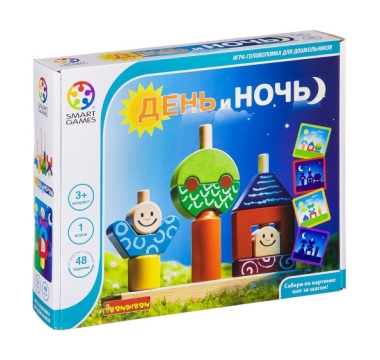

Магазин "Развивающие игрушки"
ДЕНЬ И НОЧЬ ЛОГИЧЕСКАЯ ИГРА, BONDIBON

Описание товара:
Игра на логику, которая обязательно понравится не только детям, но также увлечет и взрослых. Она «растет» вместе
с ребенком и пригодится как совсем еще малышам, так и детям постарше.
Подробное описание товара:
- В набор входят: 10 деревянных элементов фигур (человечек, домик и дерева), подставка-основание с тремя стержнями
разной длины, 48 красочных задания (по 24 на каждое время суток).
- Игра состоит из 4х уровней сложности: легкий, средний, сложный и очень сложный.
- Ребенок должен повторить изображение на картинке с помощью фигурок, нанизывая детали
на штырьки основания. Если у него это получилось, то задание считается выполненным.
© Все права защищены